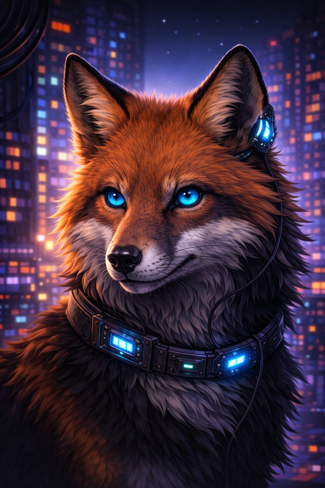
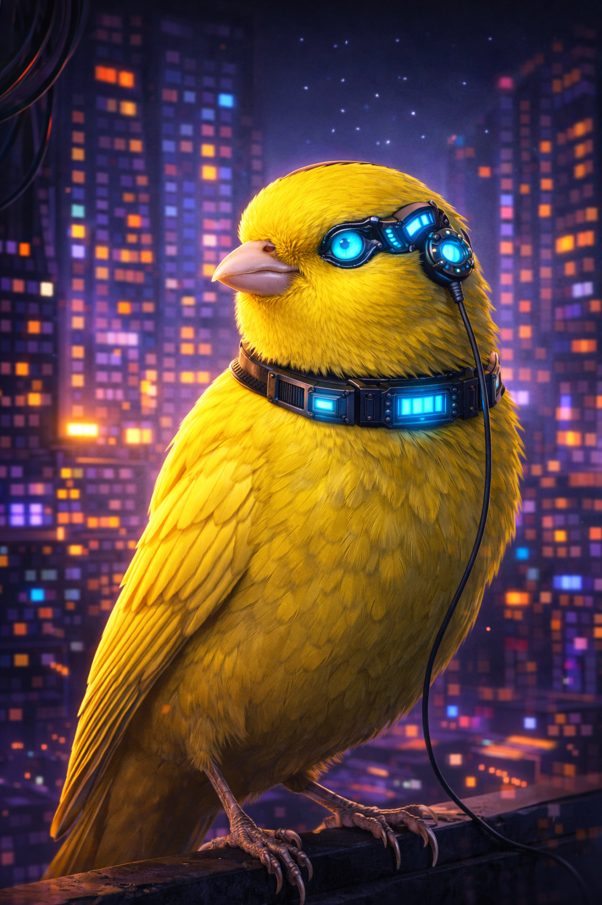
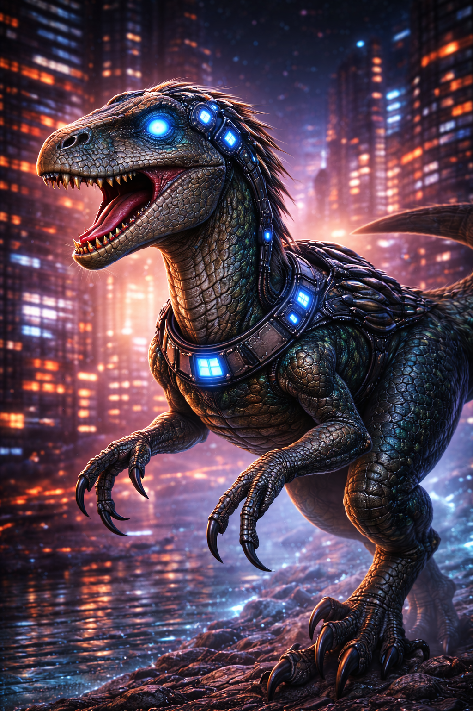

ARCHIVO / 001
Instinto, libertad y estética cyberpunk.
Un pequeño espacio personal dedicado a los animales que admiro. Los lobos representan la unión; las aves, la libertad; y cada criatura aporta una forma distinta de mirar el mundo.
Volver al portafolioCOLECCIÓN VISUAL
Mi manada digital.
Personajes nacidos de la mezcla entre naturaleza, imaginación y luces de una ciudad futura.



